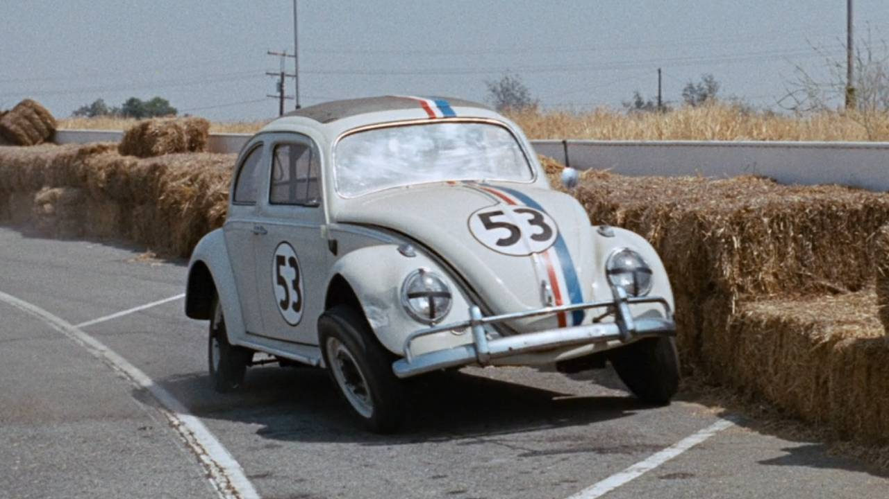
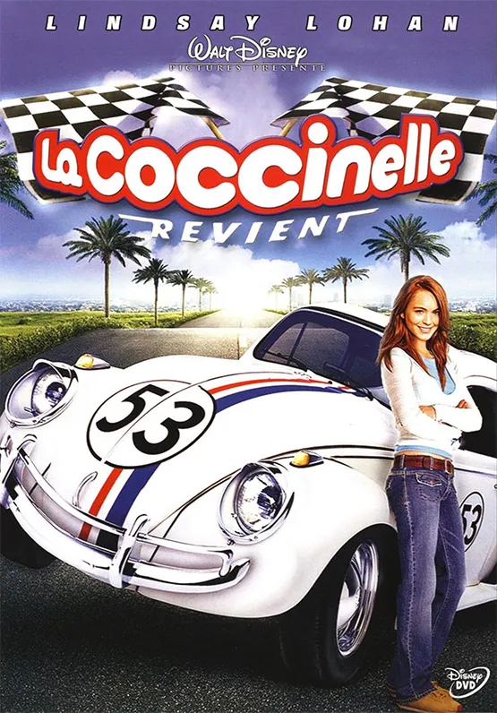
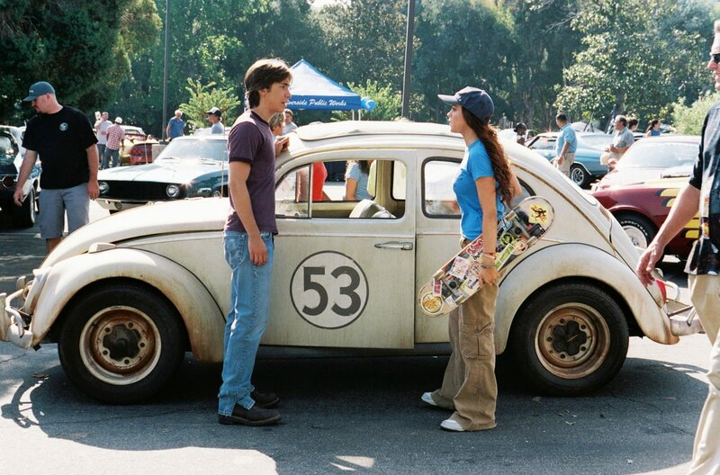

La coccinelle revient - Angela Robinson



1H30 ➡︎ La coccinelle revient - Angela Robinson, 2005, 101 min
Herbie, la Coccinelle la plus populaire de l'histoire de l'automobile, est de retour. Dans cette comédie d'aventure, Maggie Peyton, la nouvelle propriétaire de Choupette, la Volkswagen de caractère, est en piste pour la compétition Nascar. Sur route, en tout-terrain et sur piste...